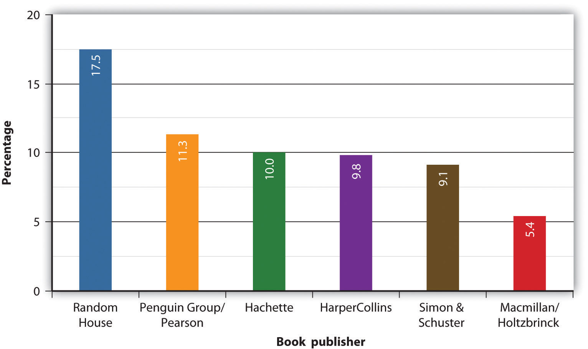

Most historians trace the origins of the book back to the ancient Egyptians, whose papyrus scrolls looked very different from the books we’re accustomed to today. From the time they first developed a written script, around 3000 BCE (Before Common Era), Egyptians wrote on many different surfaces, including metal, leather, clay, stone, and bone. Most prominent, though, was the practice of using reed pens to write on papyrus scrolls. In many ways, papyrus was an ideal material for the Egyptians. It was made using the tall reeds that grew plentifully in the Nile Valley. Individual sheets of papyrus were glued or sewn together to make scrolls. A standard scroll was around 30 feet long and 7 to 10 inches wide, while the longest Egyptian scroll ever found stretched over 133 feet, making it almost as long as the Statue of Liberty when it was rolled all the way out.Harry Ransom Center, “The Gutenberg Bible at the Ransom Center,” University of Texas at Austin, http://www.hrc.utexas.edu/educator/modules/gutenberg/books/early/.
By the 6th century BCE, papyrus was the most common writing surface throughout the Mediterranean and was used by the Greeks and Romans. Because papyrus grew in Egypt, the Egyptians had a virtual monopoly over the papyrus trade. Many ancient civilizations housed their scrolls in large libraries, which acted as both repositories of knowledge and displays of political and economic power. The Royal Library of Alexandria boasted around half a million scrolls in its collection; some scholars claim that this was between 30 and 70 percent of all books in existence at the time.Kevin Kelly, “Scan This Book!” New York Times Magazine, May 14, 2006. But other powerful entities in the ancient world were growing tired of the Egyptians’ monopoly over the papyrus trade.
Parchment was made from treated animal skins that were scraped thin to create a flexible, even surface. Parchment had several advantages over papyrus: It was more durable, both sides could be written on, and its trade wasn’t monopolized by the Egyptians. Its spread coincided with another crucial development in the history of the book. Between the 2nd and 4th centuries, the Romans began sewing folded sheets of papyrus or parchment together, and binding them between wooden covers. This form, called the codexA book with pages bound together and enclosed within a cover; the format used for modern books., has essentially the same structure as today’s books. The codex was much more user-friendly than was the papyrus scroll: more portable, easier to store and handle, and less expensive to produce. It also allowed readers to quickly flip between sections. While reading a scroll was a two-handed activity, a codex could be propped open in front of a reader, allowing for note taking. Traditions changed slowly in the ancient world, however, and the scroll remained the dominant form for secular works for several centuries. The codex was the preferred form for early Christian texts, and the spread of Christianity eventually brought about the dominance of the codex; by the 6th century CE, it had almost entirely replaced the scroll.
Figure 3.2
The earliest known printed books were created using woodblock printing.
The next major innovation in the history of books, the use of block printing on paper, began in Tang Dynasty China around 700 CE, though it wouldn’t arrive in Europe for nearly 800 years. The first known examples of text printed on paper are tiny, 2.5-inch-wide scrolls of Buddhist prayers commissioned by Japan’s Empress Shōtoku in 764 CE. The earliest example of a dated, printed book is a Buddhist text called the Diamond Sutra (868 CE). Woodblock printing was a meticulous process that involved carving an entire page of text onto a wooden block, then inking and pressing the block to print a page.
In medieval Europe, however, scribes were still laboriously copying texts by hand. Book culture in the Middle Ages was dominated by monasteries, which became centers of intellectual life. The largest monasteries had rooms called scriptoriaRooms in monasteries where monks copied, decorated, and preserved volumes. where monks copied, decorated, and preserved both religious and secular volumes. Many of the classical texts we have today owe their preservation to diligent medieval monks, who thought of scholarship, even the study of secular and pre–Christian writers, as a way to become closer to God. The hand-copied books produced in the Middle Ages were much more ornate than the mass-produced books of today. These were illuminated manuscriptsA handwritten document in which the text is embellished by decorative additions, including borders and illustrations. that included painted embellishments that were added on to the handwritten books. The word illuminate comes from the Latin illuminare, which means to light up, and some medieval books were literally made to shine through applications of gold or silver decorations. Other ornate additions included illustrations, decorative capital letters, and intricately drawn borders. The degree of embellishment depended on the book’s intended use and the wealth of its owner. Medieval manuscripts were so highly valued that some scribes placed so-called book curses at the front of their manuscripts, warning that anyone who stole or defaced the copy would be cursed. Written in a copy of the Vulgate Bible, for example, is this warning: “Whoever steals this book let him die the death; let be him be frizzled in a pan; may the falling sickness rage within him; may he be broken on the wheel and be hanged.”Virginia Commonwealth University Libraries, “Book Curses,” http://www.library.vcu.edu/preservation/curse.html.
Though illuminated books were highly prized, they were also expensive and labor-intensive to create. By the end of the Middle Ages, the papal library in Avignon, France, held only a few thousand manuscripts compared to the nearly half-million texts found at the Library of Alexandria in ancient times.Steven Roger Fischer, A History of Reading (New York: Reaktion Books, 2004). Bookmaking in the Western world became somewhat less expensive when paper emerged as the primary writing surface. Making paper from rags and other fibers, a technique that originated in 2nd-century China, reached the Islamic world in the 8th century and led to a flowering of book culture there. By the 12th century, Marrakesh, in modern-day Morocco, was said to have had a street lined with a hundred booksellers. But it wasn’t until the 14th century that paper manufacturing began in earnest in Europe.
Papermaking coincided with another crucial step forward in the history of books: Johannes Gutenberg’s invention of mechanical movable typeMethod of printing created by Johannes Gutenberg that uses small, movable letters. in 1448. Though the simple act of crafting small, movable letters may seem mundane in the contemporary world of digital devices and microchips, it is difficult to overstate the importance of Gutenberg’s invention and the effect it had on the world. The Biography Channel and A&E both named Gutenberg as the single most influential person of the second millennium, ahead of Shakespeare, Galileo, and Columbus, and Time magazine cited movable type as the single most important invention of the past 1,000 years. Through his invention, Gutenberg indisputably changed the world.
Much of Gutenberg’s life is shrouded in mystery. It is known that he was a German goldsmith and book printer and that he spent the 1440s collecting investors for a mysterious project. That invention turned out to be the printing press, which combined existing technologies—such as the screw press, which was already used for papermaking—with his own innovation—individual metal letters and punctuation marks that could be independently rearranged—to revolutionize how books were made. Though Gutenberg probably printed other, earlier materials, it was the Bible he printed in 1455 that brought him renown. In his small print shop in his hometown of Mainz, Germany, Gutenberg used his movable type press to print 180 copies of the Bible, 135 on paper and 45 on vellum.Harry Ransom Center, “The Gutenberg Bible at the Ransom Center,” University of Texas at Austin, http://www.hrc.utexas.edu/educator/modules/gutenberg/books/early/. This book, commonly called the Gutenberg Bible, ushered in Europe’s so-called Gutenberg RevolutionThe period of immense cultural and technological change after Johannes Gutenberg’s invention of mechanical movable type. and paved the way for the commercial mass printing of books. In 1978, the Harry Ransom Humanities Research Center of the University of Texas at Austin purchased a complete copy of the Gutenberg Bible for $2.4 million.
Over the next few centuries, the printing press changed nearly everything about how books were made, distributed, and read. Printing books was a vastly swifter system than handwriting books was, and paper was much less expensive to produce than parchment. Before the printing press, books were generally commissioned and then copied. The printing press meant that multiple identical editions of the same book could be printed in a relatively short time, while it probably would’ve taken a scribe at least a year to handwrite the Bible. As Gutenberg’s invention led to more and more printing shops springing up all over Europe, the very idea of what a book looked like began to change. In medieval times, books were the valuable, rare product of hundreds (if not thousands) of hours of work, and no two were the same. After Gutenberg, books could be standardized, plentiful, and relatively cheap to produce and disseminate. Early printed books were made to look like illuminated manuscripts, complete with hand-drawn decorations. However, printers soon realized the economic potential of producing multiple identical copies of one text, and book printing soon became a speculative business, with printers trying to guess how many copies a particular book could sell. By the end of the 15th century, 50 years after Gutenberg’s invention of movable type, printing shops had sprung up throughout Europe, with an estimated 300 in Germany alone. Gutenberg’s invention was a resounding success, and the printing and selling of books boomed. The Harry Ransom Humanities Research Center estimates that before the invention of the printing press, the total number of books in all of Europe was around 30,000. By 1500 CE, the book was thriving as an industrial object, and the number of books in Europe had grown to as many as 10 to 12 million.Bruce Jones, “Manuscripts, Books, and Maps: The Printing Press and a Changing World,” September 5, 2000, http://communication.ucsd.edu/bjones/Books/booktext.html.
The post-Gutenberg world was revolutionized by the advent of the printed book. One thing that did not substantially change, however, was the form of the book itself. Despite minor tweaks and alterations, the ancient form of the codex remained relatively intact. What did rapidly evolve was the way books were produced and distributed and the way information circulated through the world.
Simply put, the mechanical reproduction of books meant that there were more books available at a lower cost, and the growth of international trade allowed these books to have a wider reach. The desire for knowledge among the growing middle class and the new availability of classical texts from ancient Greece and Rome helped fuel the Renaissance, a period of celebration of the individual and of a turn toward humanism. For the first time, texts could be widely dispersed, allowing political, intellectual, religious, and cultural ideas to spread widely. Also for the first time, many people could read the same books and be exposed to the same ideas at the same time, giving rise to mass media and mass culture. Science was revolutionized as well. For example, standardized, widely dispersed texts meant that scientists in Italy were exposed to the theories and discoveries of scientists in England. Because of improved communication, technological and intellectual ideas spread more quickly, enabling scientists from disparate areas to more easily build on the breakthroughs and successes of others.
As the Renaissance progressed, the size of the middle class grew, as did literacy rates. Rather than a few hundred precious volumes housed in monastery or university libraries, books were available to people outside monastic or university settings, which meant that more books were available to women. In effect, the mass production of books helped knowledge become democratized. However, this spread of information didn’t proceed without resistance. Thanks in part to the spread of dissenting ideas, the Roman Catholic Church, the dominant institution of medieval Europe, found its control slipping. In 1487, only a few decades after Gutenberg first printed his Bible, Pope Innocent VIII insisted that all books be prescreened by church authorities before they were allowed to be printed.Jonathon Green and Nicholas J. Karolides, The Enyclopedia of Censorship (Facts on File, 2005), 111. One book the church banned was the Bible printed in any language other than Latin—a language that few people outside of clerical or scholarly circles understood. In 1517, Martin Luther instigated the Protestant Reformation. He challenged the church’s authority by insisting that people had the right to read the Bible in their own language. The church rightly feared the spread of vernacular Bibles; the more people who had access to the text, the less control the church was able to exert over how it was interpreted. Since the church’s interpretation of the Bible dictated in no small part the way many people lived their lives, the church’s sway over the hearts and minds of the faithful was severely undermined by accessible printed Bibles and the wave of Protestantism they encouraged. The Catholic Church’s attempt to control the printing industry proved impossible to maintain, and over the next few centuries, the church would see its power decline significantly, as it was no longer the sole keeper of religious knowledge as it had been throughout the Middle Ages.
The Bible wasn’t the only text that was beginning to be published in languages other than Latin. The Renaissance saw a growing interest in texts published in the vernacularThe native language of a population., the speech of the “common people.” As books became more available to the middle class, people wanted to read books written in their native tongue. Early well-known works in the vernacular included Dante’s Divine Comedy (first printed in Italian in 1472) and Chaucer’s Canterbury Tales (published in Middle English in the 15th century). Genres with popular appeal, such as plays and poetry, became increasingly widespread. In the 16th and 17th centuries, inexpensive chapbooksAn inexpensive, pocket-sized booklet popular from the 16th to 19th centuries, usually containing popular literature such as folk ballads, religious tracts, or children’s stories. (the name derives, appropriately enough, from cheap books) became popular. Chapbooks were small and cheaply printed, and they often included popular ballads, humorous stories, or religious tracts. The proliferation of chapbooks showed just how much the Gutenberg Revolution had transformed the written word. In just a few hundred years, many people had access to reading material, and books would no longer be considered sacred objects.
Because of the high value placed on human knowledge during the Renaissance, libraries flourished during this time period. As they had been in ancient Egypt, libraries were once again a way of displaying national power and wealth. The German State Library in Berlin was founded in 1661, and other European centers soon followed, such as the National Library of Spain in Madrid in 1711 and the British Library (the world’s largest) in London in 1759. Libraries were also associated with universities, clubs, and museums; however, these were often only for subscribers. The United Kingdom’s Public Libraries Act of 1850 fostered the development of free, public lending libraries. After the American Civil War, public libraries flourished in the newly reunified United States, helped by fundraising and lobbying by women’s clubs. Philanthropist Andrew Carnegie helped bring the Renaissance ideals of artistic patronage and democratized knowledge into the 20th century when he helped found more than 1,700 public libraries between 1881 and 1919.Barbara Krasner-Khait, “Survivor: The History of the Library,” History Magazine, October/November 2001.
While Gutenberg’s invention of the printing press ushered in an age of democratized knowledge and incipient mass culture, it also transformed the act of authorship, making writing a potentially profitable enterprise. Before the mass production of books, authorship had few financial rewards (unless a generous patron got involved). As a consequence, pre-Renaissance texts were often collaborative, and many books didn’t even list an author. The earliest concept of the copyright, from the time of the scriptoria, was who had the right to copy a book by hand. The printed book, however, was a speculative commercial enterprise, in that large numbers of identical copies could be sold. The explosive growth of the European printing industry meant that authors could potentially profit from the books they made and then wrote if their legal rights were recognized. In contemporary terms, copyrightThe exclusive rights given to a work’s creator or author, which include the right to copy, distribute, and adapt the work. allows a person the right to exclude others from copying, distributing, and selling a work. This is a right usually given to the creator, although that right can be sold or otherwise transferred. Works not covered by copyright or for which the copyright has expired are part of the public domainWorks not covered by intellectual property law or for which copyright protection has expired. Works in the public domain are essentially public property., which means that they are essentially public property and can be used freely by anyone without permission or royalty payments.
The origins of contemporary copyright law are usually traced back to the Statute of Queen Anne. This law, enacted in England in 1710, was the first to recognize the legal rights of authors, though in an incomplete manner. It granted a book’s publisher 14 years of exclusive rights and legal protection, renewable for another 14-year term if the author was still living. Anyone who infringed on a copyrighted work paid a fine, half of which went to the author and half to the government. Early copyright was intended to limit monopoly and censorship, to provide a sense of stability to authors, and to promote learning by ensuring that documents would be widely accessible.
The United States established its first copyright law not long after the Declaration of Independence. The U.S. Constitution granted Congress the power “to promote the progress of science and useful arts, by securing for limited times to authors and inventors the exclusive right to their respective writings and discoveries” in Article I, Section 8, Clause 8. The first federal copyright law, the Copyright Law of 1790, was modeled on the Statute of Queen Anne and it similarly granted exclusive rights for 14 years, renewable for 14 more if the author was living at the end of the first term.
The “limited times” mentioned in the Constitution have steadily lengthened since the 18th century. The Copyright Act of 1909 allowed for an initial 28-year term of copyright, which was renewable for one additional 28-year term. The Copyright Act of 1976, which preempted the 1909 act, extended copyright protection to “a term consisting of the life of the author and 50 years after the author’s death,” was substantially longer than the original law’s potential 56-year term. In 1998, copyright was extended even further, to 70 years after the author’s death. The 1998 law, called the Copyright Term Extension Act, also added a 20-year extension to all currently copyrighted works. This automatic extension meant that no new works would enter the public domain until 2019 at the earliest. Critics of the Copyright Term Extension Act called it the Mickey Mouse Protection Act because the Walt Disney Company lobbied for the law.Louise Krasniewicz, Walt Disney: A Biography (Santa Barbara, CA: Greenwood, 2010), 43. Because of the 20-year copyright extension, Mickey Mouse and other Disney characters remained out of the public domain, which meant that they were still the exclusive property of Disney.
The 1976 law also codified the terms of fair useAn aspect of copyright law that specifies the ways in which a work (or parts of a work) under copyright can legally be used by someone other than the copyright holder. for the first time. Fair-use law specifies the ways in which a work (or parts of a work) under copyright could legally be used by someone other than the copyright holder for “purposes such as criticism, comment, news reporting, teaching (including multiple copies for classroom use), scholarship, or research, is not an infringement of copyright.” That is, a book review quoting snippets of a book, or a researcher citing someone else’s work is not infringing on copyright. Given an Internet culture that thrives on remixes, linking, and other creative uses of source material, the boundaries of the legal definition of fair use have met with many challenges in recent years.
With the exception of self-published works, the author isn’t the person in charge of producing the book or sending it out into the world. These days, the tasks of editing, designing, printing, promoting, and distributing a book generally fall to the book’s publisher. Although authors are usually the ones with their names prominently displayed on the spine, a published book is actually the product of many different kinds of labor by many different people.
Early book printers acted as publishers, because they produced pages and sold them commercially. In England, the Stationer’s Company, which was essentially a printer’s guild, had a monopoly over the printing industry and was also allowed to censor texts. The Statute of Queen Anne, the 1710 copyright law, came about partially as a result of some of these early publishers overstepping their bounds.
In the 19th-century United States, publishers fulfilled many roles, and it was not uncommon for one company to print, wholesale, and even retail their own books. Although bookstores and printers existed in the United States, the Northeast emerged as the nation’s publishing epicenter, with hotspots in Philadelphia, New York, and Boston. During the 1800s, the U.S. book industry swiftly expanded. In 1820, the books manufactured and sold in the United States totaled about $2.5 million; by 1850, even though the price of books had dropped substantially, sales figures had quintupled.Daniel Walker Howe, What Hath God Wrought: The Transformation of America, 1815–1848 (New York: Oxford University Press, 2007). Technological advances in the 19th century, including machine-made paper and the Linotype typesetting machine, made book publishing simpler and more profitable. Many of today’s large publishing companies were created in the 19th century; for example, Houghton Mifflin originated in 1832; Little, Brown and Company formed in 1837; and Macmillan was founded in Scotland in 1843 and opened its U.S. branch in 1869. By the turn of the century, New York was the center of publishing in the United States.
The rapid growth of the publishing industry and evolving intellectual property laws meant that authors could make money from their writing during this period. Perhaps it’s no suprise, then, to learn that the first literary agents also emerged in the late 19th century. Literary agents act as intermediaries between the author and the publisher, negotiating contracts and parsing difficult legal language. The world’s first literary agent, A.P. Watt, worked in London in 1881 and essentially defined the role of the contemporary literary agent—he got paid to negotiate on behalf of the author. A former advertising agent, Watt decided to charge based on commission, meaning that he would take in a set percentage of his clients’ earnings. Watt set the fee as 10 percent, which is still considered standard today.
The biggest change to hit publishing in the first half of the 20th century was the increasing popularity of the paperback book. Books covered in less expensive, less durable paper existed since Renaissance chapbooks were invented, but they were usually crudely printed works that were meant only as passing entertainment. In 1935, the publishing industry was changed forever when Penguin Books Ltd., a paperback publisher, launched in England, ushered in the so-called paperback revolution. Instead of being crude and cheaply made, Penguin titles were simple but well designed. Though Penguin sold paperbacks for only 25 cents, it concentrated on providing works of literary merit, thus fundamentally changing the idea of what quality books should look like. Some early Penguin titles included Ernest Hemingway’s A Farewell to Arms and Dashiell Hammett’s The Thin Man. In the decades that followed, more and more paperback publishing companies were launched by people hoping to capitalize on Penguin’s success. The first U.S.-based paperback company was Pocket Books, founded in 1939. By 1960, paperbacks were outselling hardbacks in the United States.Matthew Ogle, “The Paperback Revolution,” CRC Studio, 2003, http://www.crcstudio.org/paperbacks/revolution.php.
The second half of the 20th century was marked by the consolidation of the U.S. book-publishing industry and by a larger trend toward media consolidation. Between 1960 and 1989, about 578 mergers and acquisitions occurred in the U.S. book industry; between 1990 and 1995, 300 occurred; and between 1996 and 2000, nearly 380 occurred.Albert N. Greco, The Book Publishing Industry (New York: Routledge, 2005). This was just a part of the larger international trend toward mass media consolidation, where large international media empires acquired smaller companies in many different industries. For example, the German media company Bertelsmann AG had aquired Bantam Books, Doubleday, and Random House; London-based Pearson owned Viking, Penguin, Putnam, and the Dutton Group; and AOL Time Warner owned Little, Brown and Company and Warner Books. Because publicly traded companies have obligations to their shareholders, the publishing industry found itself pressured to turn increasingly high profits. By 2010, roughly 60 percent of all books sold in the United States were published by six large publishing houses, often referred to as the Big SixThe biggest North American trade publishing houses, including Hachette Book Group, HarperCollins, Macmillan, Penguin Group, Random House, and Simon & Schuster. (see Figure 3.3).Michael Hyatt, “Top Ten U.S. Book Publishers for 2009,” January 15, 2010, http://michaelhyatt.com/2010/01/top-ten-u-s-book-publishers-for-2009.html. In the first years of the third millennium, book publishing was an increasingly centralized, profit-driven industry.
Figure 3.3
The Big Six control more than 60 percent of the book market.Michael Hyatt, “Top Ten U.S. Book Publishers for 2009,” January 15, 2010, http://michaelhyatt.com/2010/01/top-ten-u-s-book-publishers-for-2009.html.
Questions about the exact extent of fair use of copyrighted materials have been especially relevant in recent years because of the popularity of using and manipulating copyrighted materials on the Internet. Go on a website with user-uploaded content (such as YouTube or Wikipedia) and find examples of works that use copyrighted content in a way that you think is justified under fair use. Then, find examples of works that you think do not use copyrighted content in a way permitted by fair use. Answer the following questions when you have completed your research: